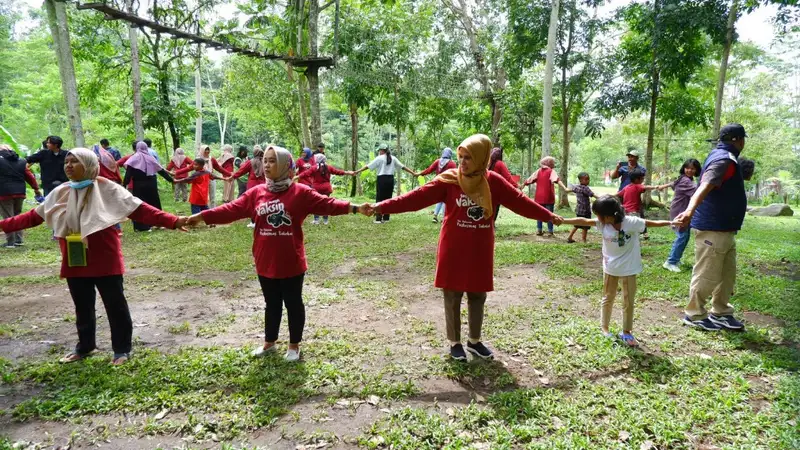

Cara memilih penyedia jasa outbound corporate team building yang tepat adalah dengan mengevaluasi pengalaman fasilitator, standar keselamatan, rekam jejak program, dan kemampuan menyesuaikan aktivitas dengan tujuan perusahaan.
- Pengalaman dan sertifikasi fasilitator menjadi indikator utama kualitas penyedia jasa outbound.
- Standar keselamatan lapangan wajib dipastikan sebelum menentukan pilihan, terutama untuk aktivitas fisik.
- Rekam jejak dan portofolio program sebelumnya membantu menilai kesesuaian penyedia dengan kebutuhan tim.
- Fleksibilitas penyedia dalam menyesuaikan program dengan tujuan spesifik perusahaan sangat penting.
- Membandingkan beberapa penawaran membantu mendapatkan keseimbangan antara kualitas dan biaya.
Apa Saja Kriteria Fasilitator Outbound yang Perlu Diperhatikan?
Kriteria fasilitator outbound yang perlu diperhatikan meliputi pengalaman menangani kelompok korporat, sertifikasi keselamatan, dan kemampuan memandu sesi refleksi yang menghubungkan aktivitas dengan konteks kerja.
Fasilitator yang berpengalaman biasanya mampu membaca dinamika kelompok dengan cepat dan menyesuaikan pendekatan sesuai karakter peserta. Selain itu, fasilitator yang baik juga memiliki kemampuan memandu sesi debriefing secara efektif, karena tahap inilah yang menentukan sejauh mana pengalaman lapangan dapat diterjemahkan menjadi pembelajaran nyata bagi tim.
Sertifikasi keselamatan menjadi hal yang tidak boleh diabaikan, terutama untuk aktivitas yang melibatkan risiko fisik seperti tantangan navigasi lapangan atau penggunaan peralatan tertentu. Penyedia jasa yang kredibel umumnya bersedia menunjukkan bukti sertifikasi fasilitator saat diminta oleh calon klien korporat.
Bagaimana Cara Menilai Standar Keselamatan Penyedia Jasa Outbound?
Cara menilai standar keselamatan penyedia jasa outbound adalah dengan menanyakan prosedur mitigasi risiko, ketersediaan peralatan standar, dan kebijakan asuransi bagi peserta program.
Penyedia jasa yang menerapkan standar keselamatan baik biasanya memiliki prosedur tertulis mengenai penanganan situasi darurat, termasuk protokol evakuasi dan pertolongan pertama di lokasi kegiatan. Selain itu, peralatan yang digunakan untuk aktivitas fisik sebaiknya diperiksa secara berkala dan sesuai standar keamanan yang berlaku umum di industri kegiatan luar ruang.
Perusahaan yang memesan jasa outbound sebaiknya juga menanyakan apakah penyedia menawarkan perlindungan asuransi tambahan bagi peserta, khususnya untuk aktivitas yang memiliki tingkat risiko fisik lebih tinggi seperti kegiatan di area pegunungan atau perairan.
Menurut catatan industri pelatihan luar ruang, insiden kecil dalam kegiatan outbound umumnya dapat diminimalkan secara signifikan apabila penyedia jasa menerapkan briefing keselamatan yang menyeluruh sebelum aktivitas dimulai (Sumber: pedoman keselamatan kegiatan luar ruang, tahun 2023).
Pertanyaan Apa Saja yang Perlu Diajukan Sebelum Memesan Jasa Outbound?
Pertanyaan yang perlu diajukan sebelum memesan jasa outbound meliputi pengalaman menangani klien korporat, fleksibilitas program, standar keselamatan, dan rincian biaya yang termasuk dalam paket.
Beberapa pertanyaan praktis yang dapat diajukan kepada calon penyedia jasa antara lain:
- Sudah berapa lama penyedia menangani program outbound untuk klien korporat.
- Apakah program dapat disesuaikan dengan tujuan spesifik tim, bukan hanya paket standar.
- Bagaimana prosedur keselamatan yang diterapkan selama kegiatan berlangsung.
- Apa saja yang termasuk dalam biaya paket, termasuk akomodasi, konsumsi, dan dokumentasi.
- Apakah tersedia sesi debriefing terstruktur di akhir program.
Jawaban atas pertanyaan-pertanyaan ini dapat membantu perusahaan menilai kredibilitas dan kesesuaian penyedia jasa dengan kebutuhan tim secara lebih objektif.
Bagaimana Cara Menyesuaikan Program Outbound dengan Tujuan Perusahaan?
Cara menyesuaikan program outbound dengan tujuan perusahaan adalah dengan mendiskusikan secara spesifik permasalahan tim yang ingin diatasi sebelum penyedia jasa menyusun rangkaian aktivitas.
Setiap tim memiliki tantangan yang berbeda, misalnya tim yang baru terbentuk mungkin lebih membutuhkan aktivitas perkenalan dan pembangunan kepercayaan dasar, sementara tim yang sudah lama bekerja sama namun mengalami hambatan komunikasi mungkin memerlukan aktivitas yang lebih menekankan pada penyelesaian konflik dan pengambilan keputusan bersama.
Penyedia jasa yang baik biasanya akan melakukan sesi konsultasi awal untuk memahami kondisi tim sebelum menyusun rangkaian program, alih-alih langsung menawarkan paket generik yang sama untuk semua klien.
FAQ
Apa hal pertama yang harus dicek saat memilih penyedia jasa outbound?
Hal pertama yang perlu dicek adalah pengalaman penyedia dalam menangani klien korporat serta rekam jejak program yang pernah dijalankan.
Apakah penting menanyakan sertifikasi fasilitator outbound?
Penting, terutama untuk aktivitas yang melibatkan risiko fisik, karena sertifikasi menunjukkan standar keselamatan dan kompetensi fasilitator.
Bagaimana jika perusahaan memiliki anggaran terbatas untuk outbound?
Perusahaan dapat mendiskusikan kebutuhan dan anggaran secara terbuka dengan penyedia jasa untuk mendapatkan rekomendasi program yang sesuai tanpa mengorbankan aspek keselamatan.
Arya
penulis artikel yang sudah berpengalaman di dalam dunia wisata outbound Batu Malang.